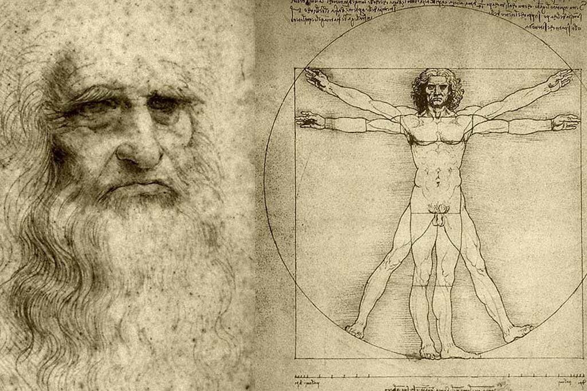

Cronología
Leonardo da Vinci
 Nacimiento: 5 de abril de 1452 en Vinci, Italia.
Nacimiento: 5 de abril de 1452 en Vinci, Italia.
Familia: Hijo ilegítimo de un notario y una campesina. Su padre tuvo once hijos varones en total.
Formación Artística: A los 14 años se convirtió en aprendiz en el taller de Andrea del Verrocchio en Florencia, donde aprendió pintura, escultura y diseño mecánico.
Innovaciones Artísticas: Fue pionero en técnicas como el sfumato y la pintura al óleo. Sus obras maestras incluyen La Mona Lisa y La última cena.
Contribuciones Científicas: Realizó más de 30 disecciones humanas para estudiar la anatomía.
Vida Personal: Fue homosexual en una época donde esto era socialmente estigmatizado. Fue acusado de sodomía a los 24 años, lo que lo marcó socialmente.
Fallecimiento: 2 de mayo de 1519 a los 67 años en Amboise, Francia, la leyenda popular lo describe falleciendo en brazos del rey Francisco I.
Biografía
Resumen
Leonardo da Vinci nació el 15 de abril de 1452 en Vinci, una pequeña localidad cercana a Florencia, Italia. Fue hijo ilegítimo de un notario, Piero da Vinci, y una joven campesina llamada Caterina. Desde joven mostró una curiosidad insaciable y un talento excepcional para el dibujo, lo que lo llevó a ser aprendiz en el taller del maestro Andrea del Verrocchio en Florencia. Allí aprendió pintura, escultura y diseño mecánico, superando rápidamente a su mentor. A lo largo de su vida, Leonardo trabajó en diversas ciudades italianas como Florencia, Milán y Roma. En Milán, bajo el patrocinio de Ludovico Sforza, creó obras maestras como La última cena y desarrolló estudios científicos e ingenieriles. En sus últimos años, se trasladó a Francia por invitación del rey Francisco I y murió en Cloux (actual Clos-Lucé) el 2 de mayo de 1519.
Contexto Historico
Su mundo
 Leonardo vivió durante el Renacimiento italiano (siglos XV-XVI), un periodo caracterizado por un renacer cultural que integraba arte, ciencia y humanismo. Este contexto influyó profundamente en su desarrollo como artista e inventor. Trabajó para mecenas poderosos como los Médici en Florencia y Ludovico Sforza en Milán, quienes financiaron tanto sus proyectos artísticos como científicos. Su capacidad para combinar arte y ciencia lo convirtió en una figura única dentro del Renacimiento. Obras como El hombre de Vitruvio simbolizan esta unión al representar las proporciones humanas basadas en principios matemáticos y filosóficos.